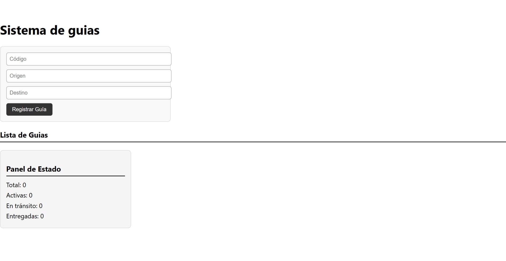

React-Django Hound Express
Es una aplicación desarrollada para la empresa Hound Express, diseñada para registrar y gestionar números de guía de paquetería de forma eficiente.

Es una aplicación desarrollada para la empresa Hound Express, diseñada para registrar y gestionar números de guía de paquetería de forma eficiente.
El sistema permite ingresar nuevos envíos y actualizar su estado entre activa, en tránsito o entregada, ofreciendo un control claro del flujo logístico. El backend está construido con Python y Django, encargado de la lógica, enrutamiento, validaciones y conexión con la base de datos, mientras que el frontend utiliza React para crear una interfaz moderna, rápida y fácil de usar. El resultado es una plataforma completa que combina una API robusta en Django con una experiencia de usuario intuitiva en React, ideal para monitorear envíos en tiempo real.